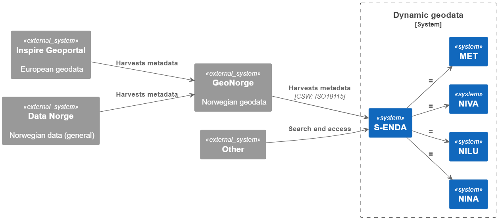

Repository structure
documentation: folder where documentation is written in markdown formatdocumentation/SUMMARY.md: the file that tells mdBook how to structure the contents- subfolders correspond with the folder structure in the
documentationfolder where the diagrams are automatically rendered into svg by GitHub actions. book.toml: configuration for mdBook
Update documentation
- Create a new branch
- Make your changes in the documentation folder in the new branch
- Create a pull request.
Introduction
This document describes general data management practices in line with the FAIR (Findable, Accessible, Interoperable and Reusable) guiding principles for scientific data management, and focuses on the management and sharing of dynamical geodata (i.e., geolocated data about processes in nature). The practices aim at a metadata-driven data management regime. The primary focus of this handbook is on management of dynamic geodata. It provides a synopsis of the general data management practices of S-ENDA partners. We have prepared an overview for organisation specific information that can be updated and merged into the general handbook by the user organisations.
The purpose of the Data Management Handbook (DMH) is threefold:
- to provide an overview of the principles for FAIR data management to be employed;
- to help personnel identify their roles and responsibilities for good data management; and
- to provide personnel with practical guidelines for carrying out good data management.
The intended audience for this DMH is any personnel involved in the process of making data available for the end user. This process can be viewed as a value chain that moves from the producer of the data to the data consumer (i.e., the end user). The handbook provides description and summary of data management principles. Details of the practical implementation of the principles are described along 4 pillars: structuring and documenting data; data services; user portals and documentation; and data governance. Practical guidance for data producers is also provided.
The DMH is a strategic governing document and should be used as part of the quality framework the organisation is using.
The S-ENDA partners:
- Norwegian Meteorological Institute (Meteorologisk institutt - MET)
- Norwegian Institute for Air Research (Norsk institutt for luftforskning - NILU)
- Norwegian Institute for Nature Research (Norsk institutt for naturforskning - NINA)
- Norwegian Institute for Water Research (Norsk institutt for vannforskning - NIVA)
About S-ENDA
S-ENDA is part of a larger effort within the national geodata strategy (“Alt skjer et sted”), and relates to this strategy through GeoNorge, which is developed and operated by the Norwegian Mapping Authority (“Kartverket”). GeoNorge, in turn, relates to the European INSPIRE Geoportal through the Inspire directive. In particular, S-ENDA is responsible for Action 20 of the Norwegian geodata strategy. The goal of Action 20 is to establish a distributed, virtual data center for use and management of dynamic geodata. S-ENDA’s vision is that everyone, from professional users to the general public, should have easy, secure and stable access to dynamic geodata.
The vision of S-ENDA and the goal of Action 20 are aligned with international guidelines, in particular the FAIR Guiding Principles for scientific data management and stewardship. S-ENDA in a national and international context
Dynamic geodata is weather, environment and climate-related data that changes in space and time and is thus descriptive of processes in nature. Examples are weather observations, weather forecasts, pollution (environmental toxins) in water, air and sea, information on the drift of cod eggs and salmon lice, water flow in rivers, driving conditions on the roads and the distribution of sea ice. Dynamic geodata provides important constraints for many decision-making processes and activities in society.
GeoNorge is the national website for map data and other location information in Norway. Here, users of map data can search and access such information. Dynamic geodata is one such information type. S-ENDA extends GeoNorge by taking responsibility for harmonising the management of dynamic geodata in a consistent manner.

Data governance
Purpose
This chapter describes how we organise and steer data management activities in order to ensure that:
-
The guidelines described above are implemented throughout the organisation;
-
Our data management practices are in line with and contribute to the institute’s strategic aims;
-
Our data management regime is subject to review, analysis and revision in a timely manner.
These higher level aspects of data management are often referred to as data governance. A useful definition is:
"Data governance … is the overall management of the availability, usability, integrity and security of data used in an enterprise. A sound data governance program includes a governing body or council, a defined set of procedures and a plan to execute those procedures."
In this chapter we address many aspects of this definition, but a full description of data governance touches on management structures that are beyond the scope of this handbook. 5.2. Data life cycle management
Data life cycle management is steered by documentation describing how data generated or used in an activity will be handled throughout the lifetime of the activity and after the activity has been completed. This is living documentation that follows the activity and specifies what kind of data will be generated or acquired, how the data will be described, where the data will be stored, whether and how the data can be shared, and how the data will be retired (archived or deleted). The purpose of life cycle management is to safeguard the data, not just during their “active” period but also for future reuse of the data, and to facilitate cost-effective data handling.
This DMH recommends the following concepts of life cycle management to be implemented for the institution:
-
An institution specific Data Management Handbook (DMH) based on a common general template;
-
Extended discovery metadata for data in internal production chains (these are metadata elements that provide the necessary information for life cycle management just described); and
-
A Data Management Plan (DMP) document (a DMP is expected for datasets produced in external projects, but may also be useful for internal datasets, as a supplement to the extended discovery metadata).
The goal is that life cycle management information shall be readily available for every dataset managed by the institute. How these concepts are implemented are described in the subsections below.
Data Management Plan
A Data Management Plan (DMP) is a document that describes textually how the data life cycle management will be carried out for datasets used and produced in specific projects. Generally, these are externally financed projects for which such documentation is required by funding agencies. However, larger internal projects covering many datasets may also find it beneficial to create a specific document of this type.
Currently, agencies funding R&D (such as NFR and the EU) do not strictly require a DMP from the start of any project. However, for projects in the geosciences, data management is an issue that must be addressed, and the agencies strongly recommend a DMP solution. For example, NFR publishes guidelines for the contents of a DMP, including links to tools (templates and online services); these guidelines are recommended for any data management project or activity and will in time become a requirement according to NFR.
Data governance at [insert organisation here]
Current implementation
Organisational Roles
Status DMH
Status Discovery metadata
Status DMP
Planned developments in the near-term (< 2 years)
Revise DMH annually or when needed.
Expected evolution in the longer term (> 2 years)
Revise DMH annually or when needed.
Structuring and Documenting Data for Efficient Discovery and Use
Purpose
In order to properly find, understand and use geophysical data, standardised encoding and documentation are required, i.e., metadata.
Both discovery metadata and use metadata can be embedded in the files produced for a dataset through utilisation of self-explaining file formats. If properly done by the data producer, publication and preservation of data through services is simplified and can be automated. 2.2. Implementation
An essential prerequisite for structuring and documenting data is the specification of the dataset(s), cf. Section 1.1.3. The dataset is the basic building block of our data management model; all the documentation and services described in this DMH are built on datasets. The dataset specification is the first step in structuring one’s data for efficient management, and it is mandatory.
Structuring and documenting data at [insert organisation here]
Current practice in structuring and documenting data
| Supported file formats/structures | Datatype | Available metadata | Examples |
|---|---|---|---|
| Comments | |||
Data management roles and responsibilities
Context
Data is processed and interpreted to generate knowledge (e.g., about the weather) for end users. The knowledge can be presented as information in the form of actual data, illustrations, text or other forms of communication. In this context, an illustration is a representation of data, whereas data means the numerical values needed to analyse and interpret a natural process (i.e., calibrated or with calibration information; it must be possible to understand the meaning of the numerical value from the available and machine-readable information).
Advanced users typically consume some type of data in order to process and interpret it, and produce new knowledge, e.g., in the form of a new dataset or other information. The datasets can be organised in different levels, such as the WMO WIGOS definition for levels of data. Less advanced users apply information based on data (e.g., an illustration) to make decisions (e.g., clothing adapted to the forecast weather).
Between the data providers and data consumers are the processes that manage and deliver the datasets (Figure 1). A number of human roles may be defined with responsibilities that, together, ensure that these processes are carried out in accordance with the data management requirements of the organisation. The definition and filling of these roles depend heavily on the particular organisation, and each organisation must devise its own best solution.

Figure 1. Value chain for data
Data management at MET Norway
At MET Norway, data have always been managed, albeit in a rather narrow technical sense. The main focus has been on storage, primarily for operational data. More recently, the issues of delivering, sharing and reusing data have steadily gained prominence. Still, the legacy of data storage systems built up over many years is an important factor in any uniform data management program.
During the International Polar Year (IPY), MET Norway was the international coordinator for operational data. IPY data management was based on the principle of distributed data management through exchange of standardised descriptions of datasets between contributing data centres.
At the global level, the institute is the primary representative for Norway in the WMO. WMO has in recent years reorganised its approach to documenting and sharing data through two major activities: WIS and WIGOS. Both are metadata-driven activities that follow the same principles as Geonorge and INSPIRE, although there are differences concerning standards required.
Data management at NIVA
Data management at NILU
Data management at NINA
Contacts and roles
| Institute | Responsible Personnel | Role | Description | Contact |
|---|---|---|---|---|
| NIVA | Dag Hjerman | Environmental Data Science Section Leader | Projects, colaborations | dhj@niva.no |
| NIVA | Zofia Rudjord | Technical Group Lead | NIVACloud, loggers, technical inquiries | Zofia.Rudjord@niva.no |
| NIVA | Ivana Huskova | Data Specialist | Data management planning; Documentation and architecture; Data workflow improvements; data QC procedures | ivana.huskova@niva.no |
| NIVA | Kim Leirvik | Systems developer | Datasets, NIVAcloud, Data Management, NetCDF, Thredds server | kim.leirvik@niva.no |
| NIVA | Viviane Girardin | Systems engineer | LIMS or any lab-related data , Shiny, R, Data Management | viviane.girardin@niva.no |
| NILU | Kjetil Tørseth | Research Director – Atmosphere and Climate Research | Overall responsibility for EBAS at NILU | kt@nilu.no |
| NILU | EBAS data curator(s) | Curation and quality assurance of EBAS data | ||
| NILU | EBAS scientific expert(s) | Scientific responsible for certain components of EBAS data | ||
| NILU | Paul Eckhart | Senior system developer | EBAS database architecture and core software development | pe@nilu.no |
| NILU | Markus Fiebig | Senior scientist | Director of ACTRIS In Situ Data Centre unit, Vocabulary | mf@nilu.no |
| NILU | Cathrine Lund Myhre | Senior scientist | Director ACTRIS Data Centre | clm@nilu.no |
| NILU | Wenche Aas | Senior scientist | Responsible for work related to the Chemical Co-ordinating Centre of EMEP (CCC) | wa@nilu.no |
| NILU | Ann Mari Fjæraa | Senior scientist | Responsible for work related to EVDC project | amf@nilu.no |
| NILU | Richard Rud | System developer | Responsible for the ACTRIS data portal | ror@nilu.no |
| NINA | Roald Vang | Technical group lead | Steering group, Project overview | roald.vang@nina.no |
| NINA | Matteo De Stefano | Data Engineer | Data management, Documentation, Vocabularies | matteo.destefano@nina.no |
| NINA | Francesco Frassinelli | Data Engineer | Data Management, System Architecture | francesco.frassinelli@nina.no |
| NINA | Frode Thomassen Singsaas | Librarian | Vocabularies | frode.singsaas@nina.no |
| MET | The directors of MET, headed by the Director General, Roar Skålin | Steering Group | Responsible for prioritisation,strategic decisions, and resource commitment from the Departments. | roars@met.no |
| MET | Morten Wergeland Hansen | Data Manager | Has the overall responsibility for ensuring that the institute’s data management regime is implemented and followed throughout the organisation. The DM is located in the Research and Development Department,Division for Remote Sensing and Data Management (RSDM). | mortenwh@met.no |
| MET | Solfrid Agersten, Værvarslingsdivisjonen Nina Elisabeth Larsgård, Observasjons- og klimadivisjonen Eivind Støylen, Senter for utvikling av varslingstjenesten Jan Ivar Pladsen, IT-divisjonen | Data Management Group | The Data Management Group (DMG) provides support to the DM, project managers and line managers for the execution of his/her duties and acts as local points of contact for data management in the organisation. | solfrida@met.no ninael@met.no eivinds@met.no janip@met.no |
| MET | Gjermund Mamen Haugen, Værvarslingsdivisjonen Lara Ferrighi, Forsknings og utviklingsdivisjonen - Fjernmåling og Dataforvaltning (FoU-FD) Erik Totlund, IT-divisjonen | Service Organisation | The Service Organisation (SO) is responsible for operation,technical development and platform management of the services for long-term data. | gjermundmh@met.no laraf@met.no erikt@met.no |
| MET | Remote Sensing and Data Management department | The RSDM maintains the responsibility for alignment and coordination with national and international standardisation efforts and modern data management procedures, with participation of other units as required. |
Practical guides
Create a Data Management Plan (DMP)
The funding agency of your project will usually provide requirements, guidelines or a template for the DMP. If this is not the case, Science Europe offers a comprehensive Practical guide of research data management.
For researchers with no or little experience in data management, a simple way of creating a DMP is with EasyDMP
Using easyDMP
-
Log in to easyDMP, use Dataporten if your institution supports that, otherwise pick one of the other login methods.
-
Click on + Create a new plan and pick a template
-
By using the Summary button from page two and on, you can get an overview of all the questions.
Publishing the plan
Currently you can use the export function in easyDMP to download an HTML or PDF version of the DMP and use it further. This might change if "Hosted DMP" gets implemented.
Practical guides
References
Glossary of Terms and Names
Metadata types
Data Services
The purpose of this chapter is to describe services that benefit from the standardisation performed in the previous step. The information structures described in the previous chapter pave the way for efficient data discovery and use through tools and automated services. Implementation of the services must be in line with the institute’s delivery architecture.
Data services include:
-
Data ingestion, storing the data in the proper locations for long term preservation and sharing;
-
Data cataloging, extracting the relevant information for proper discovery of the data;
-
Configuration of visualisation and data publication services (e.g., OGC WMS and OpeNDAP).
Implementation
When planning and implementing data services, there are a number of external requirements that constrain choices, especially if reuse of solutions nationally and internationally is intended and wanted for the data in question. At the national level, important constraints are imposed by the national implementation of the INSPIRE directive through Norge digitalt.
User Portals and Documentation
A portal is an entry point for data consumers, enabling them to discover and search for datasets and services independently.
On the table below you will find a list of relevant portals where data from S-ENDA partners are available
User portals relevant to S-ENDA partners
| User portal | Description | Service type | Data Producer |
|---|---|---|---|
| Geonorge | Public map catalogue | Access | Geonorge |
| Arctic Data Center | The Arctic Data Centre (ADC) is a service provided by the Norwegian Meteorological Institute (MET) and is a legacy of the International Polar Year (IPY) when MET coordinated operational data streams internationally and research data nationally. | Search, Visualization | MET, NILU, NIVA, NINA, Others |
| The MET Portal | Static signpost that contains guidance and textual documentation of the data and services. | Search, Access, Visualization | MET |
| NIVA's THREDDS Data Server | Timeseries data. Still under development (test server) | Access | NIVA |
| Aquamonitor | Water monitoring system | Access, Visualization | NIVA |
| Vannmiljø | Vannmiljø is the environmental authorities' specialist system for recording and analyzing the state of water, and plays a central role in the planning and implementation of all monitoring activities that follow from the water regulations. Data will, however, be available for all cases where information on the state and development of the water environment quality is requested. | Search, Access | Miljødirektoratet, NIVA, others |
| ICES DOME | Data portal used by OSPAR, HELCOM, AMAP, and Expert Groups in the management of chemical and biological data for regional marine assessments. | Search | NIVA, others |
| NINA Geodata Portal | Geodata Portal | Access, Visualization | NINA |
| EBAS Data Portal | EBAS is a database infrastructure operated by NILU. It's main objective is to handle, store and disseminate atmospheric composition data generated by international and national frameworks such as EMEP, GAW, ACTRIS | Search, Access, Visualization | NILU, Others |
| EBAS Near-Real-Time Data | Visualization of NRT data in EBAS | Visualization | NILU, Others |
| ACTRIS Data Portal | Data Portal for all data from the Aerosol, Clouds and Trace Gases Research Infrastructure (ACTRIS), where NILU is leading the DVAS and In-Situ Data Centre units | Search, Access, Visualization | NILU, Others |
| NILU's THREDDS Server | THREDDS Server to access EBAS data and NRT products from EBAS and ACTRIS | M2M Access | NILU, Others |
| Luftkvalitetsdatabasen | Data portal with air quality measurements from norwegian measurement stations | Search, Access, Visualization, Maps | NILU, Miljødirektoratet, Norwegian municipalies |
| Acronym | Meaning |
|---|---|
| ACDD | Attribute Convention for Dataset Discovery RD5 |
| ADC | Arctic Data Centre (ADC) |
| AeN | Arven etter Nansen (English: Nansen Legacy) |
| BUFR | Binary Universal Form for the Representation of meteorological data. WMO standard format for binary data, particularly for non-gridded data (BUFR) |
| CDM | Unidata Common Data Model (CDM) |
| CF | Climate and Forecast Metadata Conventions (CF) |
| CMS | Content Management System |
| CSW | Catalog Service for the Web (CSW) |
| DAP | Data access protocol (DAP) |
| DBMS | DataBase Management System (DBMS) |
| DIANA | Digital Analysis tool for visualisation of geodata, open source from MET Norway (DIANA) |
| diana-WMS | WMS implementation in DIANA |
| DIAS | Copernicus Data and Information Access Services (DIAS) |
| DIF | Directory Interchange Format of GCMD (DIF) |
| DLM | Data life cycle management (DLM) |
| DM | Data Manager |
| DMH | Data Management Handbook (this document) |
| DMCG | Data Management Coordination Group |
| DMP | Data Management Plan (DMP definition, easyDMP tool) |
| DOI | Digital Object Identifier (DOI) |
| EBAS | Database with atmospheric measurement data at NILU |
| eduGAIN | The Global Academic Interfederation Service (eduGAIN) |
| ENVRI | European Environmental Research Infrastructures (ENVRI) |
| ENVRI FAIR | Making the ENV RIs data services FAIR." A proposal to the EU’s Horizon 2020 call INFRAEOSC-04 |
| EOSC | European Open Science Cloud (EOSC) |
| ERDDAP | NOAA Environmental Research Division Data Access Protocol (ERDDAP) |
| ESA | European Space Agency (ESA) |
| ESGF | Earth System Grid Federation (ESGF) |
| EWC | European Weather Cloud () |
| FAIR | Findability, Accessibility, Interoperability and Reusability RD3 |
| FEIDE | Identity Federation of the Norwegian National Research and Education Network (UNINETT) (FEIDE) |
| FFI | Norwegian Defence Research Establishment (FFI) |
| FORCE11 | Future of Research Communication and e-Scholarship (FORCE11) |
| GCMD | Global Change Master Directory (GCMD) |
| GCW | Global Cryosphere Watch (GCW) |
| GeoAccessNO | An NFR-funded infrastructure project, 2015- (GeoAccessNO) |
| GIS | Geographic Information System |
| GRIB | GRIdded Binary or General Regularly-distributed Information in Binary form. WMO standard file format for gridded data (GRIB) |
| HDF, HDF5 | Hierarchical Data Format (HDF) |
| Hyrax | OPeNDAP 4 Data Server (Hyrax) |
| IMR | Institute of Marine Research (IMR) |
| INSPIRE | Infrastructure for Spatial Information in Europe (INSPIRE) |
| ISO 19115 | ISO standard for geospatial metadata (ISO 19115-1:2014). |
| IPY | International Polar Year (IPY) |
| JRCC | Joint Rescue Coordination centre (Hovedredningssentralen) |
| KDVH | KlimaDataVareHus |
| KPI | Key Performance Indicator (KPI) |
| METCIM | MET Norway Crisis and Incident Management (METCIM) |
| METSIS | MET Norway Scientific Information System |
| MMD | Met.no Metadata Format MMD |
| MOAI | Meta Open Archives Initiative server (MOAI) |
| ncWMS | WMS implementation for NetCDF files (ncWMS) |
| NERSC | Nansen Environmental and Remote Sensing Center (NERSC) |
| NetCDF | Network Common Data Format (NetCDF) |
| NetCDF/CF | A common combination of NetCDF file format with CF-compliant attributes. |
| NFR | The Research Council of Norway (NFR) |
| NILU | Norwegian Institute for Air Research (NILU) |
| NIVA | Norwegian Institute for Water Research (NIVA) |
| NMDC | Norwegian Marine Data Centre, NFR-supported infrastructure project 2013-2017 (NMDC) |
| NorDataNet | Norwegian Scientific Data Network, an NFR-funded project 2015-2020 (NorDataNet) |
| Norway Digital | Norwegian national spatial data infrastructure organisation (Norway Digital). Norwegian: Norge digitalt |
| NORMAP | Norwegian Satellite Earth Observation Database for Marine and Polar Research, an NFR-funded project 2010-2016 (NORMAP) |
| NRPA | Norwegian Radiation Protection Authority (NRPA) |
| NSDI | National Spatial Data Infrastructure, USA (NSDI) |
| NVE | Norwegian Water Resources and Energy Directorate (NVE) |
| NWP | Numerical Weather Prediction |
| OAI-PMH | Open Archives Initiative - Protocol for Metadata Harvesting (OAI-PMH) |
| OAIS | Open Archival Information System (OAIS) |
| OCEANOTRON | Web server dedicated to the dissemination of ocean in situ observation data collections (OCEANOTRON) |
| OECD | The organisation for Economic Co-operation and Developement. OECD |
| OGC | Open Geospatial Consortium (OGC) |
| OGC O&M OGC | Observations and Measurements standard (OGC O&M) |
| OLA | Operational-level Agreement (OLA) |
| OPeNDAP | Open-source Project for a Network Data Access Protocol (OPeNDAP) - reference server implementation |
| PID | Persistent Identifier (PID) |
| RM-ODP | Reference Model of Open Distributed Processing (RM-ODP) |
| PROV | A W3C Working Group on provenance and a Family of Documents (PROV) |
| SAON | Sustaining Arctic Observing Networks (SAON/IASC) |
| SDI | Spatial Data Infrastructure |
| SDN | SeaDataNet, Pan-European infrastructure for ocean & marine data management |
| SIOS | Svalbard Integrated Arctic Earth Observing System |
| SIOS-KC | SIOS Knowledge Centre, an NFR-supported project 2015-2018 (SIOS-KC) |
| SKOS | Simple Knowledge Organization System (SKOS) |
| SLA | Service-level Agreement (SLA) |
| SolR | Apache Enterprise search server with a REST-like API (SolR) |
| StInfoSys | MET Norway’s Station Information System |
| TDS | THREDDS Data Server (TDS) |
| THREDDS | Thematic Real-time Environmental Distributed Data Services |
| UNSDI | United Nations Spatial Data Infrastructure (UNSDI) |
| UUID | Universally Unique Identifier (UUID) |
| W3C | World Wide Web Consortium (W3C) |
| WCS | OGC Web Coverage Service (WCS) |
| WFS | OGC Web Feature Service (WFS) |
| WIGOS | WMO Integrated Global Observing System (WIGOS) |
| WIS | WMO Information System (WIS) |
| WMO | World Meteorological Organisation (WMO) |
| WMS | OGC Web Map Service (WMS) |
| WPS | OGC Web Processing Service (WPS) |
| YOPP | Year of Polar Prediction (YOPP Data Portal) |
Metadata types
| Type | Purpose | Description | Examples |
|---|---|---|---|
| Discovery metadata | Used to find relevant data | Discovery metadata are also called index metadata and are a digital version of the library index card. They describe who did what, where and when, how to access data and potential constraints on the data. They shall also link to further information on the data, such as site metadata. | ISO 19115; GCMD/DIF |
| Use metadata | Used to understand data found | Use metadata describes the actual content of a dataset and how it is encoded. The purpose is to enable the user to understand the data without any further communication. They describe the content of variables using standardised vocabularies, units of variables, encoding of missing values, map projections, etc. | Climate and Forecast (CF) Convention; BUFR; GRIB |
| Site metadata | Used to understand data found | Site metadata are used to describe the context of observational data. They describe the location of an observation, the instrumentation, procedures, etc. To a certain extent they overlap with discovery metadata, but also extend discovery metadata. Site metadata can be used for observation network design. Site metadata can be considered a type of use metadata. | WIGOS; OGC O&M |
| Configuration metadata | Used to tune portal services for datasets intended for data consumers (e.g., WMS) | Configuration metadata are used to improve the services offered through a portal to the user community. This can, e.g., be how to best visualise a product. | |
| System metadata | Used to understand the technical structure of the data management system and track changes in it | System metadata covers, e.g., technical details of the storage system, web services, their purpose and how they interact with other components of the data management system, available and consumed storage, number of users and other KPI elements etc. |